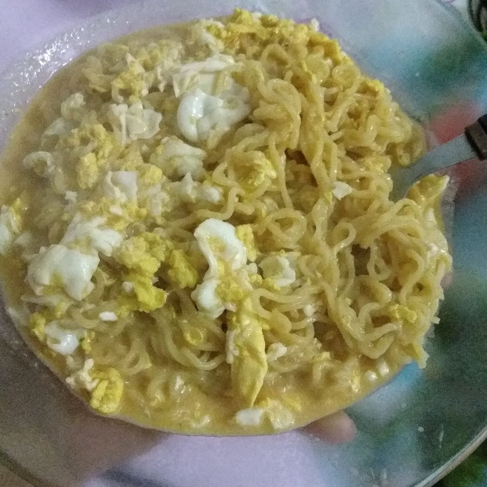

Miojo com Ovo

Descrição
Um clássico da culinária universitária e low-cost. Esta receita possui custo-benefício incalculável e sabor incomparável.
Diga adeus ao miojo cru tradicional e experimente essa iguaria.
Ingredientes
- 1 (um) pacote de miojo
- 2 (dois) ovos
- Água (conforme a embalagem)
- Tempero (pó)
Preparo
- Ferver a água na panela
- Acrescentar o miojo e cozinhá-lo por 2 minutos
- Adicionar ovos
- Mexer e colocar o tempero
- Esquentar à gosto; quanto mais tempo, mais cozidos ficarão os ovos.
- Delicie-se!
Página Principal